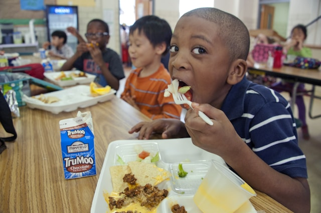
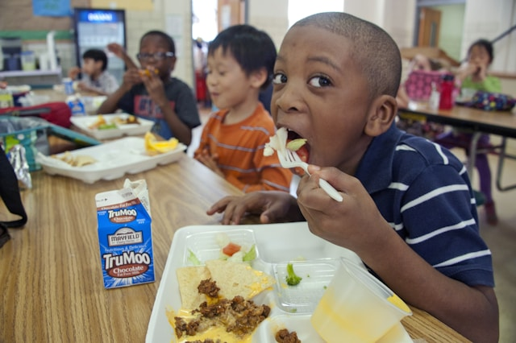

At Bright Futures Aftercare, we provide a variety of programmes to support children’s academic, social, and physical development.
- Homework Help: Tutors and volunteers guide children through their schoolwork to boost confidence and improve results.
- Reading Circles: Fun and interactive reading activities designed to improve literacy skills and inspire a love of books.
- Sports & Games: Physical activities that promote teamwork, fitness, and healthy lifestyles.
- Nutritious Meals: Wholesome snacks and meals are provided daily to ensure children stay energised and focused.